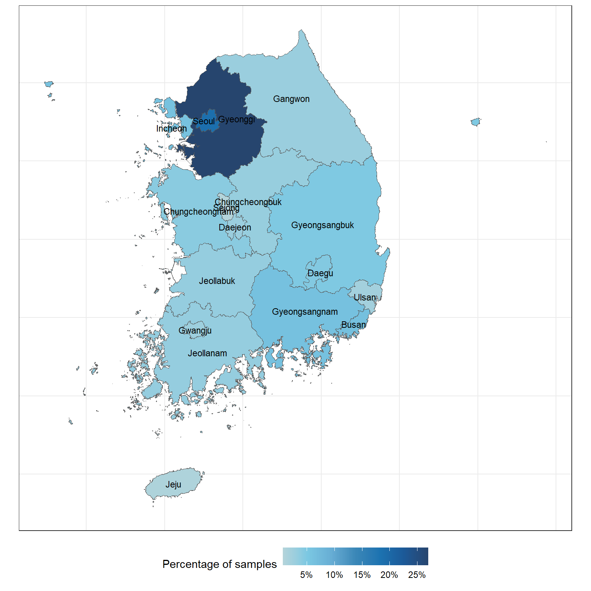

Code
required <- c(
"readxl",
"magrittr",
"lubridate",
"janitor",
"dplyr",
"skimr",
"ggplot2",
"sf",
"stringr",
"gtsummary"
)required <- c(
"readxl",
"magrittr",
"lubridate",
"janitor",
"dplyr",
"skimr",
"ggplot2",
"sf",
"stringr",
"gtsummary"
)Installing those that are not installed yet:
to_install <- required[!required %in% installed.packages()[, "Package"]]
if (length(to_install))
install.packages(to_install)Loading the packages for interactive use:
invisible(sapply(required, library, character.only = TRUE))Korean map
setwd("../Data")
korea_map <- st_read(dsn = "gadm41_KOR.gpkg", layer = "ADM_ADM_1") |>
sf::st_transform(5179) |>
mutate(city = str_extract(NAME_1, "^[^-]+"))Cancer Awareness data
setwd("../Data")
df <- readRDS("cancer_awareness_2025_processed.rds")df |>
group_by(city) |>
count() |>
ungroup() |>
mutate(per = n/sum(n)) |>
left_join(korea_map, ., by = "city") |>
ggplot(aes(
fill = per,
geometry = geom,
label = city
)) +
geom_sf() +
paletteer::scale_fill_paletteer_c(
"ggthemes::Classic Blue",
na.value = "white",
labels = scales::label_percent(),
name = "Percentage of samples"
) +
geom_sf_text(size = 3, color = "black") +
theme_bw() +
theme(
axis.text = element_blank(),
axis.ticks = element_blank(),
axis.title = element_blank(),
legend.position = "bottom",
legend.key.width = unit(1, "cm")
)
ever_smoke_df <- df |>
filter(Q14 != 1) |>
mutate(
smoker = case_when(Q14 == 2 ~ "Ex-smoker", .default = "Current smoker"),
quitting_status = case_when(smoker == "Current smoker" & attitude_to_quit == "Yes" ~ "Fail to quit",
smoker == "Ex-smoker" & attitude_to_quit == "Yes" ~ "Success to quit",
.default = "Current smoker & dont want"),
failed_cess = case_when(quitting_status == "Fail to quit" ~ 1,
.default = 0)
) |>
filter(quitting_status != "Current smoker & dont want")ever_smoke_df |>
mutate(
pack_year = case_when(
smoker == "Ex-smoker" ~ (ex_smkr_daily_avg / 20) * ex_smkr_years,
smoker == "Current smoker" ~ (cr_smkr_daily_avg / 20) * cr_smkr_years
),
bmi = weight / (height / 100)^2,
current_ocupation = case_when(
DQ1_3_1 == 1 ~ "Day shift",
DQ1_3_1 == 2 ~ "Shift work",
DQ1_3_1 == 3 ~ "Night shift",
.default = "Not applicable"
),
smk_educated = factor(smk_educated, levels = c("Yes", "No")),
personal_cc_exp = factor(
personal_cc_exp,
levels = c(1, 0),
labels = c("Yes", "No")
),
family_cc_exp = factor(
family_cc_exp,
levels = c(1, 0),
labels = c("Yes", "No")
),
close_to_cc_exp = factor(
close_to_cc_exp,
levels = c(1, 0),
labels = c("Yes", "No")
)
) |>
tbl_summary(
by = quitting_status,
statistic = list(
all_continuous() ~ "{mean} ({sd})",
all_categorical() ~ "{n} / {N} ({p}%)"
),
digits = all_continuous() ~ 2,
label = list(
smk_educated = "Received education of smoking cessation",
pack_year = "Pack year",
current_ocupation = "Current ocupation",
personal_cc_exp = "Personal experienced with cancer",
family_cc_exp = "Family experienced with cancer",
close_to_cc_exp = "Close relationship experienced with cancer"
),
type = list(
c(smk_educated, personal_cc_exp, family_cc_exp, close_to_cc_exp) ~ "categorical"
),
include = c(
age,
bmi,
pack_year,
quitting_status,
smk_educated,
current_ocupation,
personal_cc_exp,
family_cc_exp,
close_to_cc_exp
)
) |>
add_p()| Characteristic | Fail to quit N = 2861 |
Success to quit N = 5861 |
p-value2 |
|---|---|---|---|
| age | 49.73 (12.64) | 55.25 (11.92) | <0.001 |
| bmi | 24.48 (2.78) | 24.01 (2.40) | 0.046 |
| Pack year | 16.65 (12.61) | 15.96 (11.20) | 0.9 |
| Received education of smoking cessation | 0.057 | ||
| Yes | 97 / 286 (34%) | 162 / 586 (28%) | |
| No | 189 / 286 (66%) | 424 / 586 (72%) | |
| Current ocupation | 0.5 | ||
| Day shift | 243 / 286 (85%) | 482 / 586 (82%) | |
| Night shift | 7 / 286 (2.4%) | 26 / 586 (4.4%) | |
| Not applicable | 9 / 286 (3.1%) | 20 / 586 (3.4%) | |
| Shift work | 27 / 286 (9.4%) | 58 / 586 (9.9%) | |
| Personal experienced with cancer | <0.001 | ||
| Yes | 6 / 286 (2.1%) | 49 / 586 (8.4%) | |
| No | 280 / 286 (98%) | 537 / 586 (92%) | |
| Family experienced with cancer | 0.019 | ||
| Yes | 77 / 286 (27%) | 204 / 586 (35%) | |
| No | 209 / 286 (73%) | 382 / 586 (65%) | |
| Close relationship experienced with cancer | 0.003 | ||
| Yes | 123 / 286 (43%) | 314 / 586 (54%) | |
| No | 163 / 286 (57%) | 272 / 586 (46%) | |
| 1 Mean (SD); n / N (%) | |||
| 2 Wilcoxon rank sum test; Pearson’s Chi-squared test | |||
ever_smoke_df |>
mutate(
diet_practice = case_when(Q37 == 1 ~ "Yes", .default = "No"),
drinking_practice = case_when(
Q53 %in% c(1, 2) ~ "Light/Moderate",
Q53 %in% c(3, 4) ~ "Heavy/Addiction",
.default = "Not drink"
),
exercise_practice = case_when(Q64 == 1 ~ "Yes", .default = "No"),
high_inten_min_week = Q65_1_1 * Q65_1_2,
moderate_inten_min_week = Q65_2_1 * Q65_2_2,
healthy_weight_practice = case_when(Q70 == 1 ~ "Yes", .default = "No")
) |>
mutate(across(
c(diet_practice, exercise_practice, healthy_weight_practice),
~ factor(.x, levels = c("Yes", "No"))
),
drinking_practice = factor(
drinking_practice,
levels = c("Not drink", "Light/Moderate", "Heavy/Addiction")
)) |>
tbl_summary(
by = quitting_status,
statistic = list(
all_continuous() ~ "{mean} ({sd})",
all_categorical() ~ "{n} / {N} ({p}%)"
),
type = list(
c(
diet_practice,
drinking_practice,
exercise_practice,
healthy_weight_practice
) ~ "categorical"
),
label = list(
diet_practice = "Diet practice",
drinking_practice = "Drinking practice",
exercise_practice = "Exercise practice",
high_inten_min_week = "High-intensity physical activity minutes per week",
moderate_inten_min_week = "Moderate-intensity physical activity minutes per week",
healthy_weight_practice = "Healthy weight practice"
),
digits = all_continuous() ~ 2,
include = c(
diet_practice,
drinking_practice,
exercise_practice,
high_inten_min_week,
moderate_inten_min_week,
healthy_weight_practice
)
) |>
add_p()| Characteristic | Fail to quit N = 2861 |
Success to quit N = 5861 |
p-value2 |
|---|---|---|---|
| Diet practice | <0.001 | ||
| Yes | 124 / 286 (43%) | 369 / 586 (63%) | |
| No | 162 / 286 (57%) | 217 / 586 (37%) | |
| Drinking practice | <0.001 | ||
| Not drink | 28 / 286 (9.8%) | 148 / 586 (25%) | |
| Light/Moderate | 160 / 286 (56%) | 357 / 586 (61%) | |
| Heavy/Addiction | 98 / 286 (34%) | 81 / 586 (14%) | |
| Exercise practice | <0.001 | ||
| Yes | 46 / 286 (16%) | 185 / 586 (32%) | |
| No | 240 / 286 (84%) | 401 / 586 (68%) | |
| High-intensity physical activity minutes per week | 63.01 (105.82) | 73.27 (113.13) | 0.3 |
| Moderate-intensity physical activity minutes per week | 71.03 (95.32) | 108.26 (130.38) | <0.001 |
| Healthy weight practice | 0.021 | ||
| Yes | 169 / 286 (59%) | 393 / 586 (67%) | |
| No | 117 / 286 (41%) | 193 / 586 (33%) | |
| 1 n / N (%); Mean (SD) | |||
| 2 Pearson’s Chi-squared test; Wilcoxon rank sum test | |||
4.3.1 Social demographic
Code